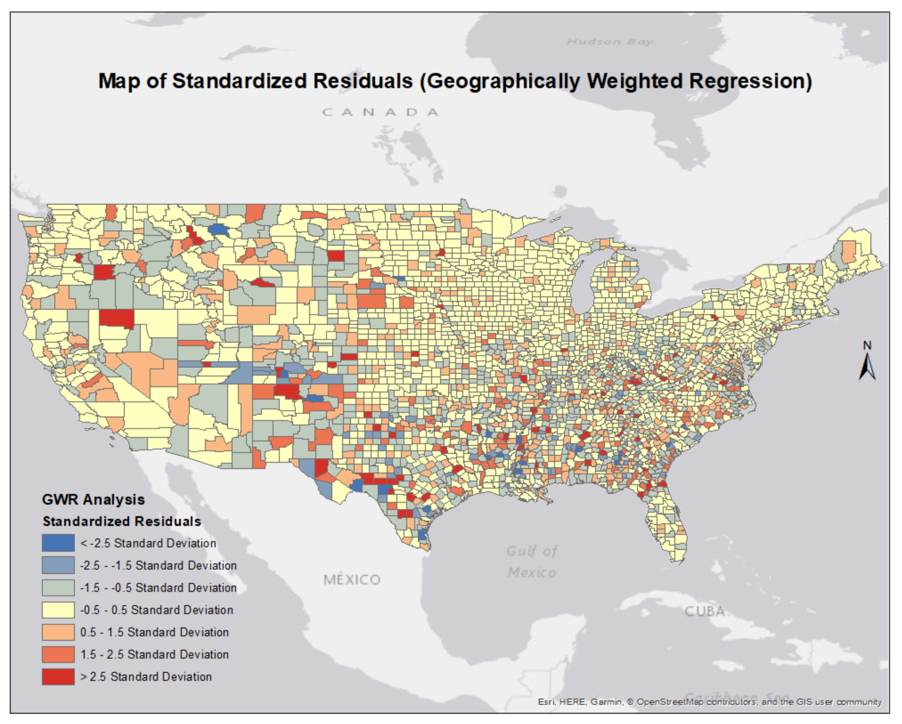

Toggle navigation
Menu
VS
About
Work
Resume
Contact
Projects
Shaded relief map of Bicycle Grand Tour of Canada.
Softwares used:
ArcGIS, Photoshop, Illustrator, and Google Earth Pro
Visual Storytelling - Longform Infographic.
Softwares used:
ArcGIS, indiemapper, and Illustrator.

Geographically Weighted Regression Analysis of Homicide Rates in the US.
Softwares used:
ArcGIS - Spatial Statistics.
Research Project for GEOG 690 (Senior Seminar in Geography and Environmental Science) at SFSU.